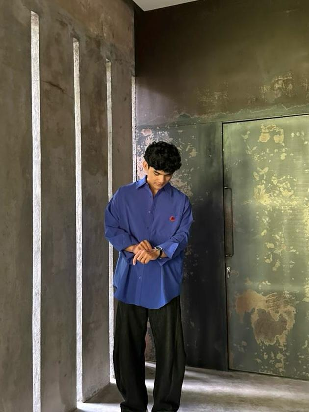
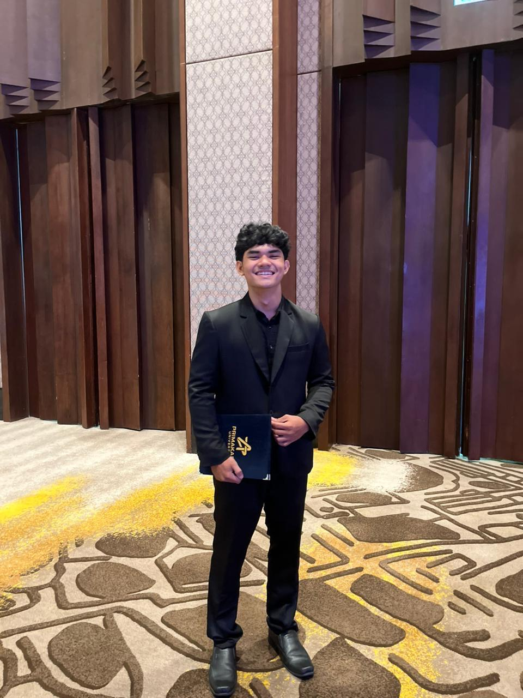
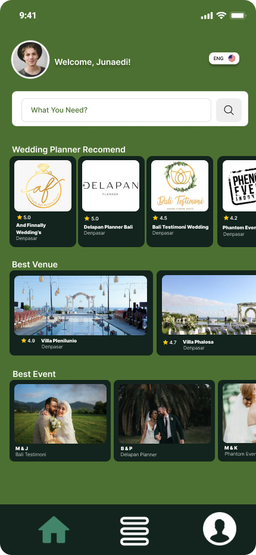
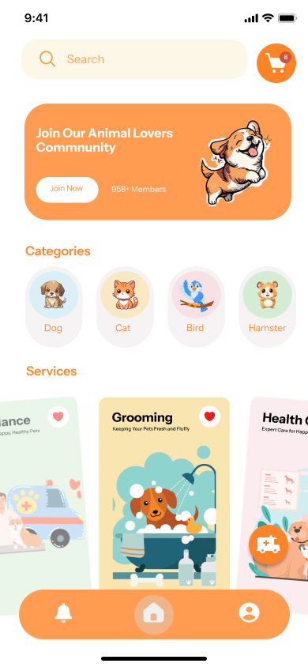
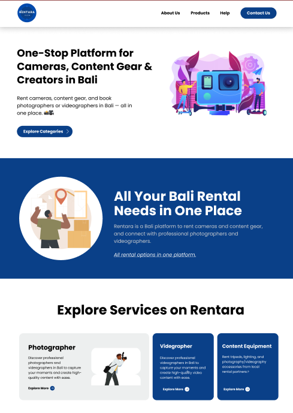
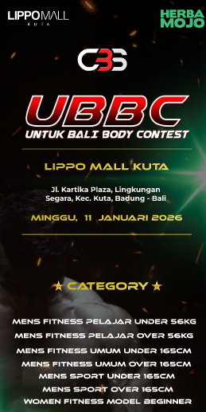
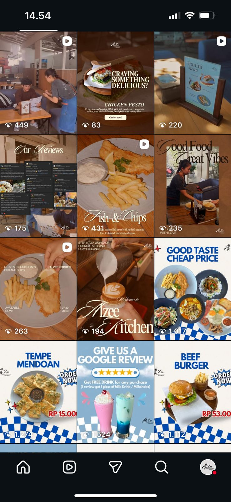

UI/UX Designer — designing intuitive, aesthetic, and user-centered interfaces. I believe great design begins with deep empathy for the people who use it.

About Me

Halo! Saya Agung Devan Prawira, seorang UI/UX Designer yang sedang menempuh studi Sistem Informasi. Latar belakang akademis saya memberi saya pemahaman unik tentang bagaimana teknologi bekerja — dan bagaimana manusia berinteraksi dengannya.
Saya percaya bahwa desain yang hebat bukan hanya soal tampilan visual yang menarik — tapi tentang bagaimana sebuah produk terasa ketika digunakan. Setiap keputusan desain saya selalu berangkat dari riset, data, dan kebutuhan nyata pengguna.
Saat ini saya fokus membangun portofolio di bidang aplikasi mobile dan platform digital, mulai dari event planner, petcare, hingga layanan kreatif. Terbuka untuk kolaborasi, magang, dan proyek freelance.
Karya Pilihan

Platform mobile untuk mempermudah pencarian dan pemesanan vendor event dalam satu aplikasi — mulai dari dekorasi, F&B, production, hingga entertainment. Dirancang untuk mempertemukan klien dan vendor secara efisien dengan pengalaman yang mulus.

Aplikasi petcare on-demand yang memungkinkan pemilik hewan peliharaan memanggil layanan perawatan langsung ke rumah — grooming, veteriner kunjungan, pet sitting, dan konsultasi. Fokus pada keamanan data hewan dan kemudahan komunikasi antara pemilik dan provider.

Website untuk penyewaan kamera dan peralatan fotografi, sekaligus marketplace jasa fotografer dan videografer profesional. Menghubungkan kreator konten, fotografer, dan klien dalam satu platform yang terintegrasi dengan sistem booking dan portofolio photographer.

Event Body Contest yang di selenggarakan setiap satu tahun sekali, oleh Cheap Bali Supplement untuk mewadahi binaragawan yang ingin menunjukan bakatnya.

Alzee Kitchen adalah tempat makan dengan menu lezat, suasana nyaman, dan pelayanan ramah untuk dinikmati bersama teman maupun keluarga.
Cara Kerja Saya
Kontak
Saya terbuka untuk kolaborasi desain, proyek freelance, magang, atau sekadar ngobrol panjang tentang user experience dan desain produk.
dewaagungdevan@gmail.com